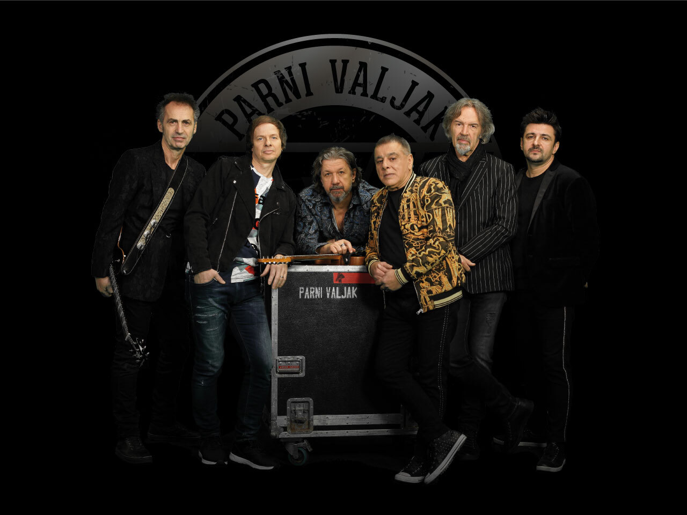

Parni valjak hrvatski je pop-rock sastav. Osnovan je 1975., razilaženjem Grupe 220, a na sceni je do danas, s malom pauzom 1988. godine te četverogodišnjom pauzom od 2005. do 2009. godine. Prvu postavu tvorili su Husein Hasanefendić "Hus" (solo gitara, akustične gitare i vokal), Aki Rahimovski (vokal, klavijature), Srećko Antonioli (bubnjevi, udaraljke i prateći vokal), Zlatko Miksić "Fuma" (bas-gitara) i Jurica Pađen (solo gitara, akustične gitare i vokal). Parni valjak je jedan od "pokretača" čitavog vala rock i pop-rock sastava u Hrvatskoj i ostatku bivše Jugoslavije.Sastav osnivaju Husein Hasanefendić - Hus i Jurica Pađen zajedno s Vladimirom Mihaljekom - Mihom, koji je donedavno bio menadžer Bijelog dugmeta, pa je sastav zamišljen kao zagrebačka inačica toga tada popularnoga bosanskohercegovačkoga sastava. Sastavu se pridružuju Zlatko Miksić – Fuma (bas gitara), Aki Rahimovski (vokal) i bubnjar Srećko Antonioli. Sastav je uskoro počeo izdavati singlove, no zbog loših tekstova i navodnih krađa melodija kritika ih napada. Godine 1976. izdaju svoj prvi studijski album Dođite na show! gdje konačno pokazuju "nekakvu" kvalitetu, ali to nije dovoljno. S tog albuma se izdvajaju tek pjesme "Predstavi je kraj" i "Prevela me mala žednog preko vode". Drugi album objavljuju pod nazivom Glavom kroz zid 1977. godine, no i dalje se ne ističu previše, a s ovog albuma se ističu pjesme "Lutka za bal" i "Kravata oko vrata (buntovnik bez razloga)". Godine 1978. Hus i Aki odlaze u vojsku, te tako sastav prestaje s djelovanjem, a tijekom te pauze napušta ih Jurica Pađen i osniva sastav Aerodrom. Po povratku iz vojske sastav nastavlja s djelovanjem i to s Branimirom Johnnyjem Štulićem, no, ta suradnja traje tek dva tjedna, nakon čega on odlazi i osniva sastav Azra. No Johnnyjev dolazak u sastav utječe na Husa, tako sljedeći albumi imaju drugačiji ukus. Valjak i Štulić ostaju u dobrim odnosima, naime, Hus Azri producira prvi singl pjesmama "Balkan" i "A šta da radim". Godine 1979. sastavu se priključuju Ivan Piko Stančić (bubnjevi) te bivši gitarist Prljavog kazališta Zoran Cvetković. Iste godine objavljuju treću ploču pod nazivom Gradske priče. Na njoj se nalazi Johnnyjeva pjesma "Jablan", a ističu se pjesme "Ulične tuče" i "Stranica dnevnika", u kojoj je, po Husovim riječima, Aki po prvi puta zazvučao kako treba. Nakon uspjeha te ploče, objavljuju i englesku inačicu tog albuma namijenjenu inozemstvu pod nazivom City Kids, no ta ploča ne doživljava veći uspjeh, te je danas vrlo rijetka.
